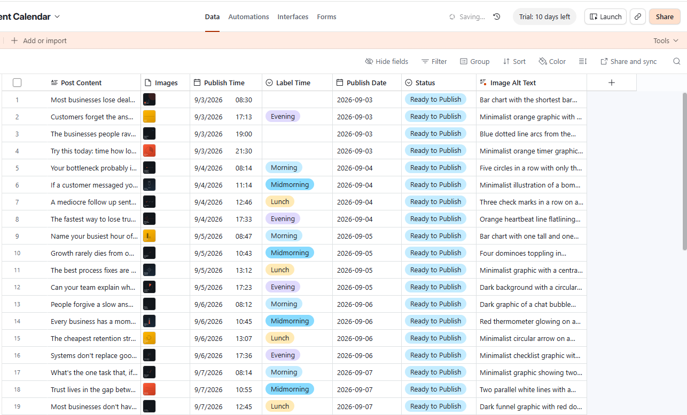
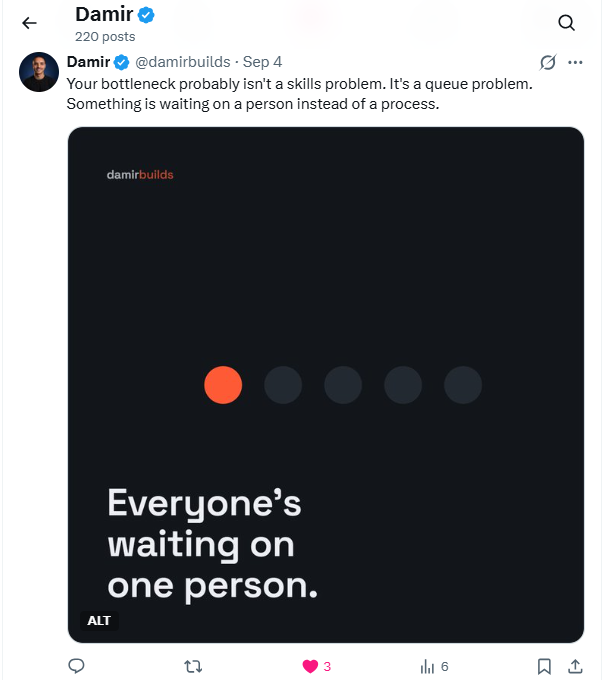
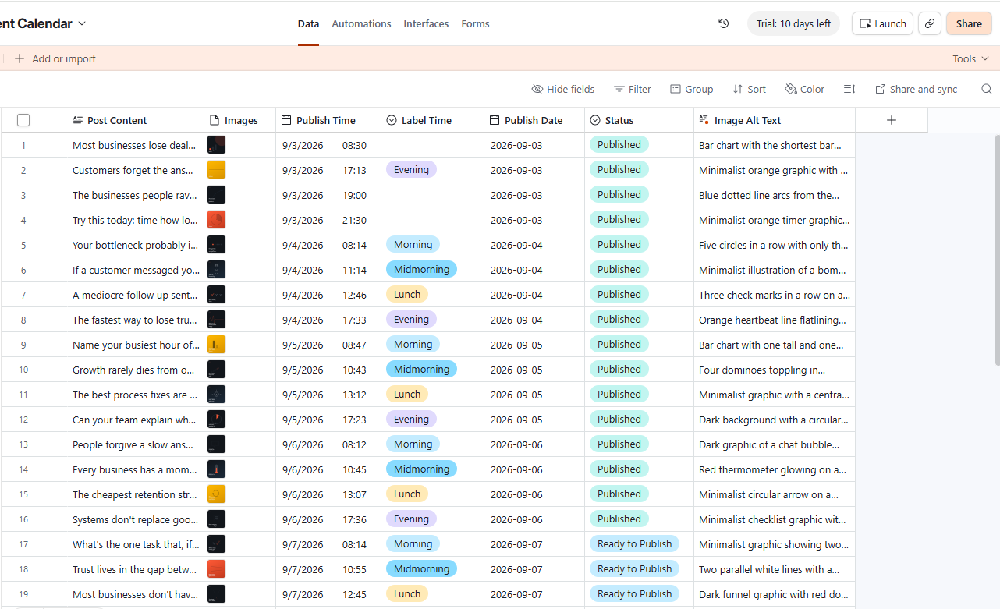

I used to forget to post for days. Now it happens automatically, without a SaaS company touching my content.
Add your posts to a spreadsheet whenever you want. They go out on schedule, straight from your own accounts. No dashboard, no subscription, no third party in the middle.
One-time setup. Runs on your own Airtable + Make.com/n8n accounts.
Pay once
Set up once. No monthly bill, ever.
You own your data
Unlike scheduling tools, your data lives in your account, never a third party's.
No lock-in
Pause it or turn it off anytime. It's your workflow, in your account.
How it works
Two accounts you already own, connected once. No dashboard to check, no tool to log into.
Real example
1. Schedule the post
Added once in Airtable, set to auto-post.

2. It goes live on X
Posted automatically, right on schedule.

3. Marked as published
The spreadsheet row updates itself. Nothing to track by hand.

How SaaS scheduling tools actually work
A third party owns your data and your posting schedule.
You pay every month, for as long as you stay.
You connect your X account to their platform, and your content and posting history live on their servers, not yours. You don't own that data, you're renting access to it. Cancel, and everything you built there goes with it.
How this automation works
Three pieces, connected by API. Nothing in the middle ever stores your content.
You own your data and your posting schedule.
One-time setup fee.
Your content moves straight from your spreadsheet to X's own API. Make.com or n8n only relays it in that moment. It's not a database, and it doesn't keep a copy.
This workflow vs. a SaaS scheduler
Same job, done, but the difference is in who's holding your data and how far the system can go.
What's included
Everything set up, owned, and supported. Not a workflow handed off and left for you to figure out.
Full done-for-you setup
I build, configure, and test the entire automation for you. It's ready to use from day one. Nothing for you to piece together.
You own 100% of it
The setup and the data are entirely yours. Nothing is stored with, or handed off to, a third party.
No workflow subscription
A one-time setup fee. No recurring fee for workflow maintenance.
You can always reach me
Message me directly with questions or tweaks. No ticket queue, no outsourcing.
Room to grow
Add new steps later, like email, SMS, or multi-platform posting, without starting over.
Automated, on-brand post visuals
An AI image-generation app and prompt system, built around your brand guidelines. It reads each post's copy and generates a high-end visual to match, automatically. Included free with setup.
Before you ask
You could try, but the integration involves real technical challenges (API rate limits, authentication expiry, formatting mismatches between tools) that are already solved here. You get a working system on day one instead of a weekend of debugging.
No. Once it's set up, you just add content to a spreadsheet. No coding or maintenance required.
Custom logic, AI-generated content, or multi-platform posting are all available as add-ons, quoted based on what you need.
I can migrate your existing content and schedule over for you as part of the setup, so there's no need to recreate everything from scratch.
$149, once. That's it.
No monthly bill. No third party holding your content. Just a working system you own.
Custom X auto-posting automation, fully built and tested for you.
Runs on your own Airtable + Make.com (or n8n) account. You own everything.
No SaaS subscription, no recurring fee.
Free migration of your existing content and schedule if you're switching from another tool.
Bonus: the AI image-generation prompt and workflow used to create post visuals, included free.
Optional add-ons available afterward: AI-written content, multi-platform posting, custom logic, quoted separately.
Takes 2 minutes to start. I'll have it live within 48 hours.
My word on it: I build every automation personally, test it before handing it over, and I'm the one you talk to if you ever want anything adjusted. No agencies, no tickets, just me.